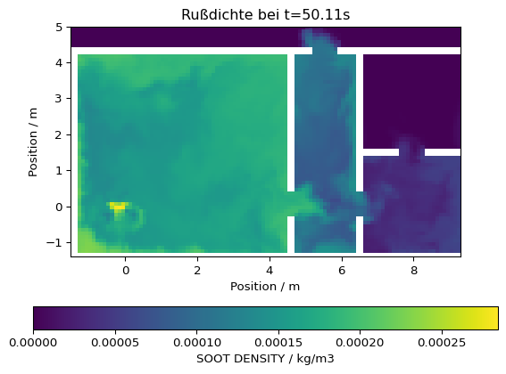
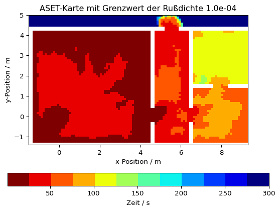
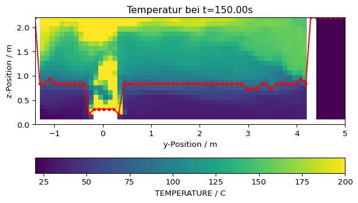

import fdsreader
import matplotlib.pyplot as plt
import numpy as np69 Verfügbare sichere Evakuierungszeit (ASET)
Dieses Beispiel demonstriert eine Analyse von Slice-Daten, um die Karte der verfügbaren sicheren Evakuierungszeit (ASET) sowie die zeitliche Entwicklung der Rauchsichtbarkeitsschicht zu bestimmen. Das verwendete Szenario ist eine Mehrraumwohnung.
pfad_zur_simulation = '../skript/01-data/apartment_01'
sim = fdsreader.Simulation(pfad_zur_simulation)
print(sim)Simulation(chid=Appartment,
meshes=8,
obstructions=23,
slices=20,
data_3d=5,
smoke_3d=3)# Rußdichte-Slice laden, senkrecht zur z-Achse in 1,5 m Höhe
slc = sim.slices.get_by_id('SootDensityZ_1.5m')
# Da die Simulation auf mehreren Gittern basiert, wird eine globale Datenstruktur erstellt;
# Wände werden als ungültige Datenpunkte (NaN) dargestellt
slc_data = slc.to_global(masked=True, fill=np.nan)Zuerst wird eine Visualisierung der Daten zu einem ausgewählten Zeitpunkt mit der Funktion imshow durchgeführt.
# Zeitindex ermitteln
it = slc.get_nearest_timestep(50)
# Daten visualisieren
plt.imshow(slc_data[it,:,:].T, origin='lower', extent=slc.extent.as_list())
# Achsenbeschriftung und Farbleiste
plt.title(f'Rußdichte bei t={slc.times[it]:.2f}s')
plt.xlabel('Position / m')
plt.ylabel('Position / m')
plt.colorbar(orientation='horizontal', label=f'{slc.quantity.name} / {slc.quantity.unit}')
Nun werden die lokalen ASET-Werte berechnet:
- Über alle räumlichen Elemente der Slice-Daten iterieren
- Alle Zeitpunkte bestimmen, an denen der Begehbarkeits-Grenzwert überschritten wird
- Falls dies der Fall ist, den ersten Zeitpunkt als lokalen ASET-Wert setzen
# Beliebiger Grenzwert für die Begehbarkeit
grenzwert_rußdichte = 1e-4
# Karte mit maximaler ASET als Standardwert erstellen
aset_karte = np.full_like(slc_data[0], slc.times[-1])
# Wände auf NaN setzen
aset_karte[np.isnan(slc_data[0,:,:])] = np.nan
# 1D-Schleife über alle Array-Indizes, ix ist ein zweidimensionaler Index
for ix in np.ndindex(aset_karte.shape):
# Lokale Werte, die den Grenzwert überschreiten, ermitteln
lokaler_aset = np.where(slc_data[:, ix[0], ix[1]] > grenzwert_rußdichte)[0]
# Falls vorhanden, ersten Zeitpunkt als ASET-Wert verwenden
if len(lokaler_aset) > 0:
aset_karte[ix] = slc.times[lokaler_aset[0]]Mit der berechneten Karte kann nun eine grafische Darstellung erzeugt werden, ähnlich wie bei anderen Größen – hier mit diskreter Farbskala.
# Diskrete (12 Werte) Farbskala erstellen
cmap = plt.cm.get_cmap('jet_r', 12)
# Visualisierung der ASET-Karte
plt.imshow(aset_karte.T, origin='lower', extent=slc.extent.as_list(), cmap=cmap)
plt.title(f'ASET-Karte mit Grenzwert der Rußdichte {grenzwert_rußdichte:.1e}')
plt.xlabel('x-Position / m')
plt.ylabel('y-Position / m')
plt.colorbar(orientation='horizontal', label='Zeit / s')
# Ausgabe in Datei speichern (optional)
# plt.savefig('figs/appartment_aset_map.svg', bbox_inches='tight')
# plt.close()/var/folders/p_/ks3trxjx0jd839_g4g0vm4nc0000gn/T/ipykernel_81171/2604837150.py:2: MatplotlibDeprecationWarning: The get_cmap function was deprecated in Matplotlib 3.7 and will be removed in 3.11. Use ``matplotlib.colormaps[name]`` or ``matplotlib.colormaps.get_cmap()`` or ``pyplot.get_cmap()`` instead.
cmap = plt.cm.get_cmap('jet_r', 12)
69.1 Rauchsichtbarkeitsschicht
In diesem Beispiel wird die Höhe der Rauchsichtbarkeitsschicht analysiert. Die Unterscheidung erfolgt hier anhand eines einfachen Temperatur-Grenzwerts: Die lokale Schichthöhe ergibt sich aus dem niedrigsten Punkt, an dem eine bestimmte Temperatur überschritten wird. Die Auswertung erfolgt auf einem Slice entlang des Brenners (normal zur x-Achse).
# Slice finden
slc = sim.slices.get_by_id('BurnerTempX')
# In globale Datenstruktur umwandeln und Koordinaten extrahieren
slc_data, slc_coords = slc.to_global(masked=True, fill=np.nan, return_coordinates=True)Zunächst erfolgt eine Visualisierung der Daten zu einem beliebigen Zeitpunkt. Weiße Bereiche stellen Hindernisse dar.
# Zeitpunkt wählen
it = slc.get_nearest_timestep(150)
# Daten visualisieren
plt.imshow(slc_data[it,:,:].T, origin='lower', vmax=200, extent=slc.extent.as_list())
plt.title(f'Temperatur bei t={slc.times[it]:.2f}s')
plt.xlabel('y-Position / m')
plt.ylabel('z-Position / m')
plt.colorbar(orientation='horizontal', label=f'{slc.quantity.name} / {slc.quantity.unit}')
# plt.savefig('figs/appartment_temp_slice.svg', bbox_inches='tight')
# plt.close()
Nun wird für jede y-Position der z-Index gesucht, an dem die Temperatur den Grenzwert überschreitet. Der niedrigste dieser Punkte ist die lokale Höhe der Rauchsichtbarkeitsschicht.
# Grenzwert für Temperatur
temperatur_grenzwert = 75
# Array zur Speicherung der lokalen Höhenwerte; Standard ist maximale z-Koordinate
schicht_hoehe = np.full(slc_data.shape[1], slc_coords['z'][-1])
# Schleife über y-Indizes
for ix in range(len(schicht_hoehe)):
# Indizes finden die den Grenzwert überschreiten
lt = np.where(slc_data[it, ix, :] > temperatur_grenzwert)[0]
# Wenn welche existieren, wähle den niedrigsten von ihnen
if len(lt) > 0:
schicht_hoehe[ix] = slc_coords['z'][lt[0]]Die resultierenden Werte können nun über dem Slice dargestellt werden, um die Plausibilität zu überprüfen.
# Slice Daten
plt.imshow(slc_data[it,:,:].T, origin='lower', vmax=200, extent=slc.extent.as_list())
plt.title(f'Temperatur bei t={slc.times[it]:.2f}s')
plt.xlabel('y-Position / m')
plt.ylabel('z-Position / m')
plt.colorbar(orientation='horizontal', label=f'{slc.quantity.name} / {slc.quantity.unit}')
# Rauchsichtbarkeitsschichthöhe
plt.plot(slc_coords['y'], schicht_hoehe, '.-', color='red')
# plt.savefig('figs/appartment_temp_slice_height.svg', bbox_inches='tight')
# plt.close()
Die obige Methode kann auch über alle Zeitpunkte angewendet werden, um z. B. Mittelwert und Standardabweichung der Schichthöhe zu berechnen.
mittelwert = np.zeros_like(slc.times)
standardabweichung = np.zeros_like(slc.times)
res = np.zeros(slc_data.shape[1])
for it in range(len(slc.times)):
res[:] = slc_coords['z'][-1]
for ix in range(len(res)):
lt = np.where(slc_data[it, ix, :] > temperatur_grenzwert)[0]
if len(lt) > 0:
res[ix] = slc_coords['z'][lt[0]]
mittelwert[it] = np.mean(res)
standardabweichung[it] = np.std(res)# Darstellung des Mittelwerts und der Standartabweichung als Funktion der Zeit
plt.plot(slc.times, mittelwert, label='Mittlere Schichthöhe')
plt.plot(slc.times, standardabweichung, label='Standardabweichung')
plt.grid()
plt.legend()
plt.xlabel('Zeit / s')
plt.ylabel('Höhe / m')
# Ergebnisse in Datei abspeichern
# plt.savefig('figs/appartment_layer_mean_stddev.svg', bbox_inches='tight')
# plt.close()Text(0, 0.5, 'Höhe / m')
Beide Werte können kombiniert visualisiert werden. Die Standardabweichung ergibt ein Band um den Mittelwert.
# Mittelwert darstellen
plt.plot(slc.times, mittelwert, label='Mittlere Schichthöhe')
# Band um den Mittelwert darstellen mit Hilfe der Standartabweichung
plt.fill_between(slc.times, mittelwert-standardabweichung, mittelwert+standardabweichung, color='C0', alpha=0.3)
# Boden als Referenz zeigen
plt.ylim(bottom=0)
plt.grid()
plt.legend()
plt.xlabel('Zeit / s')
plt.ylabel('Höhe / m')
# plt.savefig('figs/appartment_layer_mean_band.svg', bbox_inches='tight')
# plt.close()Text(0, 0.5, 'Höhe / m')
Wenn bestimmte Bereiche ausgeschlossen werden sollen, kann eine koordinatenabhängige Maske verwendet werden.
# Finde Indizes bei denen die y-Koordinate zwischen den angegebenen Werten liegt
ymin = 1
ymax = 4
koordinaten_maske = np.where((slc_coords['y'] > ymin) & (slc_coords['y'] < ymax))# Slice Daten
plt.imshow(slc_data[it,:,:].T, origin='lower', vmax=200, extent=slc.extent.as_list())
plt.title(f'Temperatur bei t={slc.times[it]:.2f}s')
plt.xlabel('y-Position / m')
plt.ylabel('z-Position / m')
plt.colorbar(orientation='horizontal', label=f'{slc.quantity.name} / {slc.quantity.unit}')
# Rauchsichtbarkeitsschichthöhe
plt.plot(slc_coords['y'][koordinaten_maske], schicht_hoehe[koordinaten_maske], '.-', color='red')
# plt.savefig('figs/appartment_temp_slice_height_mask.svg', bbox_inches='tight')
# plt.close()
Das gleiche Verfahren kann erneut verwendet werden, wobei Mittelwert und Standardabweichung nur auf die maskierten Werte berechnet werden.
for it in range(len(slc.times)):
res[:] = slc_coords['z'][-1]
for ix in np.ndindex(res.shape):
lt = np.where(slc_data[it, ix, :] > temperatur_grenzwert)[1]
if len(lt) > 0:
res[ix] = slc_coords['z'][lt[0]]
# Berechnungen werden nun mit den Werten aus der Maske durchgeführt
mittelwert[it] = np.mean(res[koordinaten_maske])
standardabweichung[it] = np.std(res[koordinaten_maske])# Selbe Darstellung wie zuvor
plt.plot(slc.times, mittelwert, label='Mittlere Schichthöhe')
plt.fill_between(slc.times, mittelwert-standardabweichung, mittelwert+standardabweichung, color='C0', alpha=0.3)
plt.ylim(bottom=0)
plt.grid()
plt.legend()
plt.xlabel('Zeit / s')
plt.ylabel('Höhe / m')
# plt.savefig('figs/appartment_layer_mean_band_mask.svg', bbox_inches='tight')
# plt.close()Text(0, 0.5, 'Höhe / m')